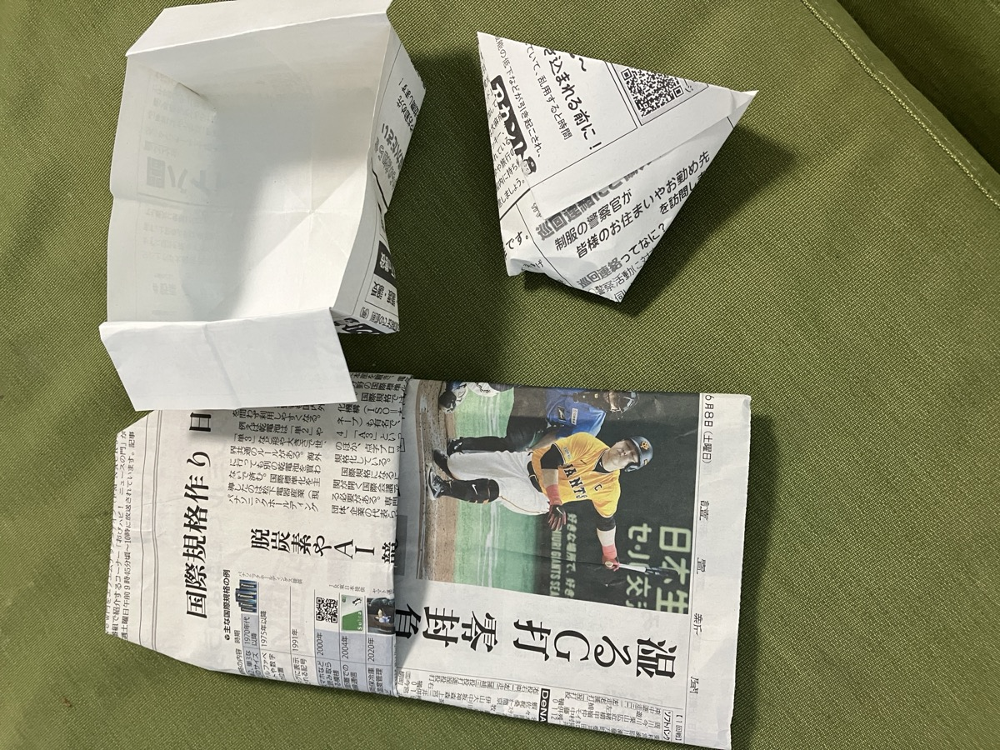

以前の日記で準備の様子をお伝えしていた、小学3年生向けの防災特別授業。先日、本番を無事に終えることができました。
今回の授業では、身近にある新聞紙を使って防災に役立つグッズを作りました。いざという時に、新聞紙1枚でスリッパや器、ゴミ袋などが作れること。子どもたちにとっては「えっ、新聞でこんなのができるの？」と驚きの連続だったようです。

新聞紙を折って作った器やゴミ箱。災害時にも役立ちます。
参加してくれた子どもは20人ほど。みんな真剣に、そして楽しそうに取り組んでくれました。手を動かしながら「できた！」と声を上げる子も多く、反応はとても良かったです。
20人の子どもを見るのはなかなか大変ですが、地域の方の協力があると本当に心強いものです。こうして世代を超えて一緒に取り組めること自体が、防災の第一歩なのかもしれません。
子どもたちが今日学んだことを、いつかおうちでも話してくれたら嬉しいです。これからも、地域みんなで「もしも」に備えていきたいと思います。